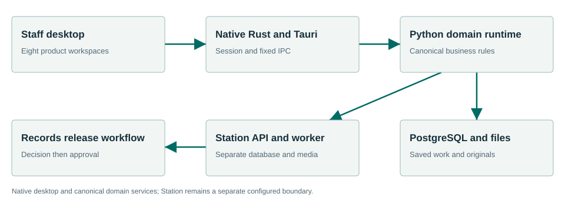

Core
A shared foundation for accountable municipal work.
Operating manual →Connected municipal products help staff prepare, review and retain municipal work. Start with a controlled private beta, keep original evidence, and make each official decision deliberately.
A shared foundation for accountable municipal work.
Operating manual →From request intake to a deliberate release.
Operating manual →Keep the agenda, decisions and evidence connected.
Operating manual →Trace every section to its source and history.
Operating manual →Retain reviewed source, advice and draft provenance for human review.
Operating manual →Review, approve and retain actual posting proof and a verified archive.
Operating manual →Bring parcel context and cited rules into one review.
Operating manual →Connect policy, analysis and municipal progress.
Operating manual →Prepare a complete, cited intake for staff review.
Operating manual →Preserve evidence and review every draft finding.
Operating manual →Capture the meeting and preserve its evidence.
Operating manual →Keep source versions and original hashes connected to staff work. Select the intended audience, review the saved revision, and explicitly attach the resulting evidence. Records retains the final response and release decisions.
The selected Townlight desktop composition includes Access and Notice staff workspaces alongside the existing municipal workflows. Station is a separately configured capture and media service. Standalone CivicCast keeps its own product, installation and data.
The changed candidate still requires a new signed installer and exact installed acceptance before distribution. This documentation site does not provision a hosted city portal.

Native staff workspaces use canonical Python/PostgreSQL services. Station has a separate database, media store and explicit Townlight authority.
Earlier releases have their own first-run and synthetic Windows Sandbox evidence. This changed source candidate requires a new signed installer and installed acceptance. This is not a claim that every screen, vendor, upgrade or city equipment configuration has been certified.
Read the exact acceptance and limits →Begin with the current manual; obtain this candidate only after its exact installer and acceptance are identified. Configure the chosen test site and have its staff review source applicability and run the existing workflows.
Station offers an encrypted live SRT feed to separate CivicCast while recording. The PEG operator controls cable broadcast. Completed recordings can be explicitly uploaded to YouTube with a reviewed title and chosen visibility. The private Records original stays intact.